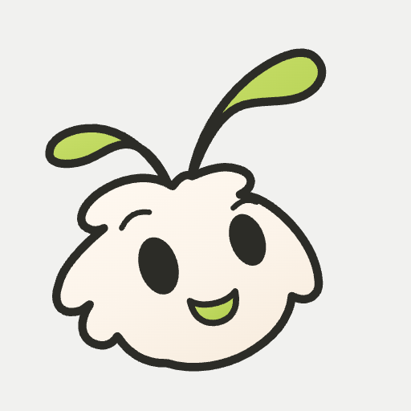

NAG / NAGARJUNA BODDU
Same little moth.
Clearer feelings.
The big soft head, tiny mittens and little feet stay. Four focused fixes make the character easier to read, move with and use.
24 finite performances · matching daylight and night poses · sound off by design
The four fixes.
A complete silhouette, even small.
A fine local edge reconnects the night antenna stems. New V5 avatars preserve both paddles inside a circle; the GitHub headers now use the same character. Inspect size comparisons.

One feeling can become another.
Sad ↔ worried keeps its concerned expression through the transition. Related feelings retain their outgoing posture through the incoming anticipation. Watch before and after.
A tiny hop, with a clean descent.
The body continues down through the wing beat. Thinking, focus, worry and gratitude have more distinct short-hand staging. Compare the hand poses.

The controls stay within reach.
A nearby selector and previous/next buttons keep navigation beside the player. Gallery selection moves keyboard focus there too. Reduced motion keeps an expressive still. See the keyboard check.

A shared face for heyNag.

The native vector applications share the existing rig. The original raster references remain intact. The paper-ground avatar is the universal GitHub option; account avatars do not switch with the theme.


Reviewed, then challenged.
Nine standing specialist roles reviewed independently, then challenged findings from other disciplines. Their scoped conclusion is to keep these refinements. The review also caught and corrected a mixed pointer-to-keyboard focus bug.
Passing motion tests
Matched poses; no anatomy or theme geometry mismatch
Inspected circular avatar sizes
These are specialist-agent reviews and implementation checks. Human emotion recognition, emotional connection and long-term recall have not been measured. Timing proofs combine numeric checks and sampled visual sequences; they are not a claim that every possible transition has been perceptually validated.
Character brand director
No brand blocker remains in the inspected V5 application artwork or README hierarchy. Complete the final documentation consistency check, retain vector provenance and tested-size limits, and present the local result as a reviewed candidate. Nag stays central through the name, first-person authorship, and real destinations while the moth remains substantial and innocent. This verdict neither publishes the work nor establishes audience appeal; motion and keyboard fixes remain subject to their specialist evidence.
- Revise against the updated documents — The broad handoff ambiguity is largely resolved. The brand README names current vector headers, the character guide identifies the new avatar and tested sizes, and the application record distinguishes local draft status from publication. At this inspection, design-system.md still contains the isolated sentence saying no V5 tiny avatar exists; root is correcting it.
- Accept the evidence limit; narrow the next-action priority — Matching assets cannot prove memory or affinity. Nevertheless, the phone proofs directly establish visible author cues: heyNag, Nag's first-person introduction, and named work. Delayed recall is useful for a future memorability question; it is not the necessary next test of this asset correction. Immediate project-finding and contribution comprehension would address the more consequential future portfolio question first.
- Accept, with an explicit boundary on redesign — The reviewer correctly distinguishes visible separation from exact emotion recognition. These GitHub applications use the neutral head and body, so uncertainty among 24 emotion names has no demonstrated bearing on their readiness. Carrying that uncertainty forward as a general identity concern would conflate a performance library with its static consumer.
Character performance director
Accept the targeted refinements for presentation. They preserve innocence while improving attention, pose separation and the demonstrated transition faults. Approval is bounded to the inspected behavior and assets, not every future story or claimed audience response.
- revise — The broader rule remains a provisional acting policy, but the requested additional pairs now have rendered evidence. Angry↔scared and sad→angry retain purposeful concern or protest in the inspected samples. Thinking→confused keeps glasses until uncertainty develops; thinking replay retains glasses while restaging its chin hand. I see no demonstrated reason to narrow the rule now.
- revise — The evidence gap has narrowed. Exact render samples clearly preserve concern through the former smile interval and keep the hop compact through landing. The replacement film has regular frame timing according to the cadence audit. However, I inspected extracted images, so I still cannot personally certify the felt rhythm of uninterrupted playback.
- accept — The revised hierarchy survives the actual reel export: Focused has distinct low hands, while Grateful deliberately joins them. Maximizing separation in every pose would erase meaningful contrast. The inspected paired frames preserve complete antenna tips, feet and wing layering in both themes.
Identity systems designer
No blocking identity defect is observed in the tested static V5 avatars and headers. Preserve these bounded refinements and finish the documentation handoff. This conclusion supports the reviewed local package, not an account upload, universal size guarantee or audience-validation claim.
- Accept within the demonstrated placements — The before/after rows show the missing stem connections restored at 96, 128 and 160px. The fresh 390px night README proof also preserves those connections without a broad aura. The face remains the main bright shape. This supports retiring the earlier objection for these vector exports, not certifying arbitrary dark backgrounds or unchanged raster sheets.
- Accept crop resolution; retain size-specific limits — Both paddles remain inside the 32/48/64px circular masks, resolving the demonstrated V2 clipping. At 32px the face is readable but fine mouth and night-stem detail is weaker. Intact geometry and broad recognition cues do not establish equal emotional readability or memorability across sizes.
- Accept derivation distinction; reject unnecessary surface matching — The current avatar and header share the native rig head and neutral face, while the retained raster has different texture and smile contours. Coherence within this application pair is directly demonstrated. Adding texture or reconstructing anatomy merely to resemble the raster would introduce changes without an observed application problem.
- Accept as completion dependency — The new application record now specifies exact files, derivation, local-draft state and tested size. Some older guide paragraphs still describe these applications as future work. That remaining contradiction belongs to package reconciliation and does not invalidate the visible artwork.
Technical character animator and rigger
No further rigging change is justified by the inspected evidence. Present the scoped fixes with precise verification claims; reserve universal transition appeal and perceived timing polish for evidence that actually measures them.
- revise scope; accept narrative distinction — The 42-pair sweep now supports finite values, short reach and nonpositive difficult-feeling mouths beyond the original two directions. My targeted samples show progressive anger/fear exchanges; thinking→confused fades glasses while changing posture; thinking replay still lowers/re-raises its acting mitten before later beats. No newly demonstrated family-rule defect remains. Scared→relieved is outside both families, so its smile is existing cross-family anticipation, not a regression caused by inheritance.
- accept — The intermediate descent stop is fixed mathematically. Ground contact may legitimately stop velocity abruptly; it is not equivalent to stopping in midair. The viewed Excited export frame preserves headroom, attached feet and matched theme poses, but a single frame cannot certify landing weight.
- accept within observed scope — The gallery handler moves focus after intentional navigation, while shared choose performs no focus transfer. This preserves sequence focus and local-control focus without changing Engine lifecycle. Captured keyboard and pointer-to-Tab paths stay at scrollY229 with playback active, resolving the earlier accidental offscreen pause.
- accept — Mitten separation improves staging without requiring every feeling to maximize negative space. The viewed Thinking frame clearly separates supporting and acting mittens; no body/limb redraw is justified.
Interaction and accessibility designer
The interaction correction is ready for local presentation. Preserve the coherent focus destination, native selection controls and reduced-motion stills. Complete the bounded documentation cleanup, report remaining perception and device questions honestly, and avoid turning them into unsupported global release gates.
- Accept within local proof scope — The review explicitly distinguishes local README proofs from a live account update. That boundary matters: coherent exported assets and correct repository references can complete this draft without an upload, audience study or new website. Likewise, my studio focus checks establish an interaction improvement, not public-site usability.
- Accept concrete completion dependency — My fresh source read still found 'A later refresh must use reviewed v5 exports' and 'a later matching avatar needs its own' review alongside the new current export paths. This is an actual handoff contradiction, not a request for more art or new research.
- Mark documented-use concern resolved — Current generator comments now explicitly describe stable standalone IDs, img use for repeated identical exports, and per-instance namespacing for inline consumers. That directly answers the reported overbroad promise. Repeated inline instances are not a demonstrated requirement of the current PNG README.
- Retain refinement; clarify reachability and evidence — The new local selector already allows arbitrary emotion changes, so these combinations are reachable today rather than hypothetical future API use. Nevertheless, broad inheritance is a reason for targeted inspection, not proof of an unwanted intention. The supplied numerical tests and pose samples should not be promoted into perceptual validation either.
Audience and character-perception researcher
The inspected local refinement preserves innocence, strengthens application consistency and removes the demonstrated sampled smile defect. No audience-specific blocker or further geometry change is justified. These are bounded visual findings, not proof of emotional connection or delayed recall. Research can guide later iteration without becoming an absolute gate for the four authorized fixes.
- accept with bounded meaning — The large name, immediate first-person sentence and named projects visibly preserve attribution opportunities. 'Keeps Nag prominent' is supported as hierarchy; it should not become a claim that unfamiliar readers correctly remember Nag or his work. Those outcomes remain distinct from remembering the moth.
- revise wording; accept restraint — The supporting mitten is lower and Focused's hands are separated: these are visible changes. Clearer intention is an expert interpretation until viewers encounter the unlabelled action. PERF-R3 correctly prevents further hand separation from becoming a general rule; gratitude can need joining hands.
- accept with application scope — Two inspected transition pairs cannot validate the reported 42-pair compatibility rule. Equally, the number of pairs does not establish a new defect or justify broad reworking. The known smile defect is absent in the sampled sad↔worried directions; other intended transitions need their own evidence when selected for use.
- accept — Explicit vector provenance is useful because visual coherence does not mean pixel identity. The cleaner application remains compatible with the intended tiny character to this reviewer. Neither texture differences nor expert agreement demonstrate a recognition problem.
Storyboard, animatic and comic staging director
The concrete staging fixes are supported. No additional production correction is established by this cross-review. Preserve the tiny anatomy, concise actions and current static applications; keep emotional meaning tied to each eventual context.
- accept scope; revise implication of breadth — The family rule is not a narrative specification, but 42 compatible pairs do not require 42 bespoke performances. Fresh sad→angry frames show a useful extension: the updated face remains downcast at 0.200–0.367s before directing its protest outward, whereas the previous version briefly smiles.
- retain as contextual question, not defect — The unchanged smile precedes an exhale in both versions. Unlike sad→worried, the destination explicitly permits recovery. Without the event that removed the fear, its appropriateness cannot be settled by a smile prohibition.
- accept bounded conclusion — The source removes the mathematical mid-descent stop. Exact samples retain attached feet through descent, contact and recovery; the interruption samples show no detached limb or enlarged stance. They do not establish perceived weight at normal speed.
- accept — Negative space serves intention, not a universal spacing rule. Joined grateful mittens contrast usefully with Focused’s two low hands and Thinking’s chin contact. Replay Thinking also avoids the old smile excursion while retaining its compact hand action.
- accept application boundary — The phone header keeps the moth connected and the name dominant. Full-reel samples 55.166667–86.400013s keep antenna tips, wing extremes and feet inside both panels. Protective overlap remains intentional; the night edge does not require extra scenery or glow.
Visual development and lighting artist
Keep the refinement. The inspected static V5 header and avatar preserve the innocent character, improve night continuity, and retain name-first hierarchy. No visual blocker is demonstrated in those placements. Source integrity, expert still-image judgment, motion quality, and human recognition remain distinct claims.
- Accept framing result; bound readability claim — Both paddles and the jaw remain inside the mask, and the face is visible at 32px. That supports a successful static crop. Fine mouth and night-stem detail are diminished there, so a tested 32px export is not proof of equal expressive clarity, unprimed recognition, or suitability at 24px.
- Accept source proof; distinguish rendered contour — The exact renderer diff adds edge paths copied from the existing antenna paths, with night-only opacity. This proves preserved construction and alignment. The extra stroke deliberately expands the visible night boundary, so unchanged path geometry does not mean identical physical drawing or pixel silhouette. That controlled distinction is the repair, not identity drift.
- Accept visible improvement; retain scale qualification — Thinking now separates the lowered supporting hand from the chin-side hand, while Focused exposes two lower mittens. The comparison supports clearer staging without longer limbs. In the smaller all-24 grid those differences remain subtle; the evidence cannot establish unaided identification of all four intentions.
- Accept evidence limit; reject any global completion gate — Sampled poses and a nonzero source tangent address concrete defects but cannot demonstrate perceived cadence. This leaves targeted playback assessment for animated uses; it does not diminish the completed static framing and lighting repair.
Sound designer
The refinements improve silent visual communication and introduce no established sound-related blocker. Keep the complete silent experience. No audio production, sonic identity or mute interface is required for this release scope.
- Accept measured correction; retain perceptual boundary — The nonzero descent tangent removes the authored stop at 900ms, and the new sampled poses preserve the tiny body and attached feet. That is sufficient to close the mathematical defect. It does not establish satisfying weight or comic rhythm; a landing tick would add another cue and cannot validate the underlying movement.
- Accept scope limit; reject treating compatibility breadth as a new defect — The concern correctly distinguishes 42 compatible directions from the two rendered transition proofs. No new sound or generalized expressive system is justified by the unreviewed combinations. A strong smile during scared-to-relieved may be meaningful release; the intended narrative cause must decide, not an assumption that negative feelings require subdued sound or face throughout.
- Accept implementation claim; clarify meaning of silent baseline — The source exposes named playback status without frame-by-frame updates. An assistive technology may speak that information; this is user-controlled access to text, not an authored character soundtrack. Calling the work silent must not imply disabling those announcements, nor treating normal playback as consent to future decorative audio. Actual spoken output remains explicitly untested.
The team’s responsibilities and review workflow are saved in team.json and AGENTS.md. Future engineering and website work returns to this team. Runtime availability can change; the roles, constraints and review history persist.
Ready for the next chapter.
Keep the character’s innocence as the fixed point. Future scenes and the heyNag.com portfolio can build around Nag’s real projects, curiosity and sense of humor.
Editable motion source · Brand library · Fixes, checks and remaining limits
This is a local refinement. GitHub publication and website deployment have not happened.